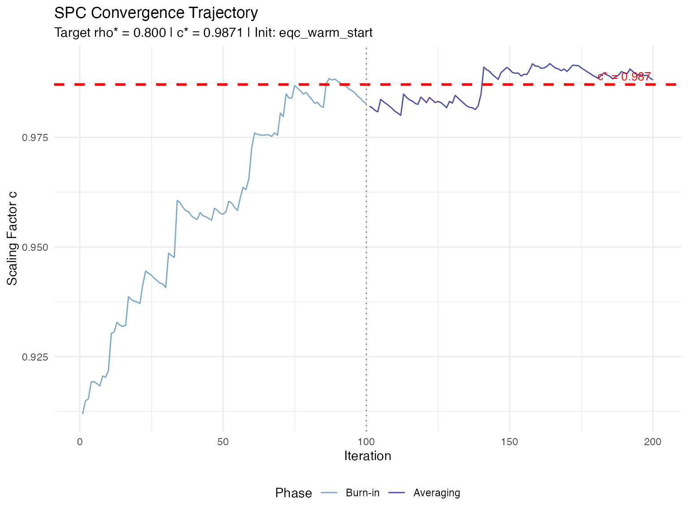
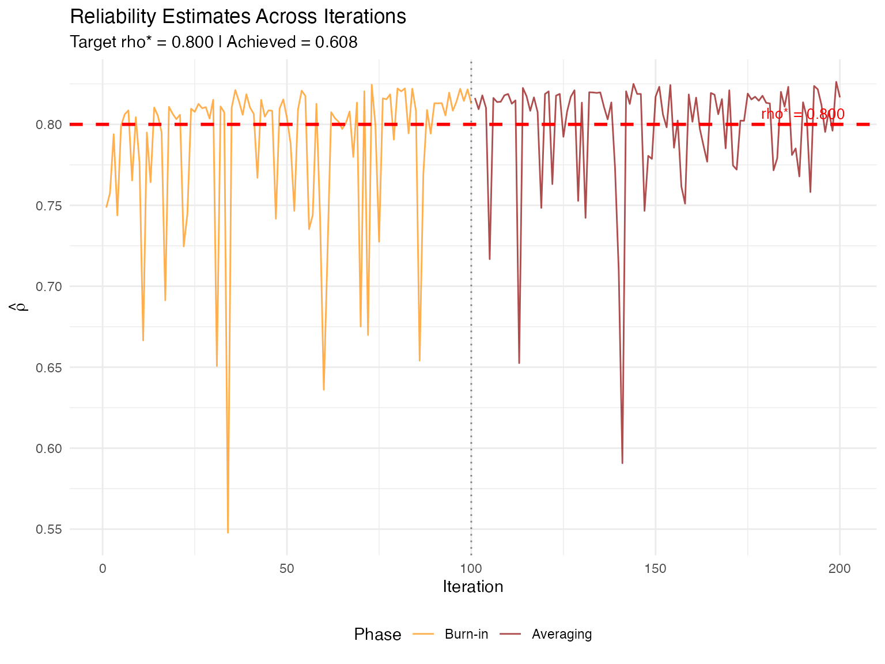

Algorithm 2: Stochastic Approximation Calibration (SPC)
Source:vignettes/spc_algorithm.Rmd
spc_algorithm.RmdOverview
Stochastic Approximation Calibration (SPC) is the secondary algorithm in IRTsimrel, designed to complement EQC (Algorithm 1). SPC uses the Robbins-Monro stochastic approximation framework to find the discrimination scaling factor that achieves a target reliability.
When to Use SPC
| Use Case | Recommendation |
|---|---|
| Routine simulation studies | Use EQC (faster, deterministic) |
| Independent validation of EQC | Use SPC with EQC warm start |
| Complex data-generating processes | Use SPC |
| Exact MSEM-based reliability targeting | Use SPC with metric = "msem"
|
| Research on stochastic approximation | Use SPC |
SPC vs EQC: Key Differences
| Feature | EQC | SPC |
|---|---|---|
| Method | Deterministic root-finding | Stochastic approximation |
| Speed | Fast (< 1 second) | Slower (depends on n_iter) |
| Default metric | MSEM or Info | MSEM or Info |
| Samples | Fixed quadrature | Fresh samples each iteration |
| Output | Point estimate | Trajectory + averaged estimate |
| Tuning | Minimal | Step size parameters |
Mathematical Foundation
The Robbins-Monro Algorithm
SPC implements the classic Robbins-Monro (1951) stochastic approximation for solving the equation:
The iterative update rule is:
where:
- is the current scaling factor estimate
- is a noisy reliability estimate at iteration
- is the target reliability
- is a decreasing step size sequence
Basic Usage
Simple SPC Calibration
# Basic SPC calibration
spc_result <- spc_calibrate(
target_rho = 0.75,
n_items = 20,
model = "rasch",
n_iter = 200,
seed = 42,
verbose = FALSE
)
#> Warning in regularize.values(x, y, ties, missing(ties), na.rm = na.rm):
#> collapsing to unique 'x' values
print(spc_result)
#>
#> =======================================================
#> Stochastic Approximation Calibration (SPC) Results
#> =======================================================
#>
#> Calibration Summary:
#> Model : RASCH
#> Target reliability (rho*) : 0.7500
#> Achieved reliability : 0.7352
#> Absolute error : 1.48e-02
#> Scaling factor (c*) : 1.0441
#>
#> Algorithm Settings:
#> Number of items (I) : 20
#> M per iteration : 500
#> M for variance pre-calc : 10000
#> Total iterations : 200
#> Burn-in : 100
#> Reliability metric : MSEM-based (bar/w)
#> Step params: a=1.00, A=50, gamma=0.67
#>
#> Convergence Diagnostics:
#> Initialization method : apc_warm_start
#> Initial c_0 : 1.2853
#> Final iterate c_n : 1.0198
#> Polyak-Ruppert c* : 1.0441
#> Pre-calculated theta_var : 1.0123
#> Converged : Yes
#> Post-burn-in SD : 0.0158
#> Final gradient (rho - rho*) : +0.0397Recommended: Warm Start from EQC
For best results, use EQC to initialize SPC:
# Step 1: Run EQC
eqc_result <- eqc_calibrate(
target_rho = 0.80,
n_items = 25,
model = "rasch",
seed = 42
)
#> Note: Target rho* = 0.800 is near the achievable maximum (0.824) for this configuration.
# Step 2: Validate with SPC (warm start)
spc_result <- spc_calibrate(
target_rho = 0.80,
n_items = 25,
model = "rasch",
c_init = eqc_result, # Pass EQC result directly!
n_iter = 200,
seed = 42
)
# Compare results
compare_eqc_spc(eqc_result, spc_result)
#>
#> =======================================================
#> EQC vs SPC Comparison
#> =======================================================
#>
#> Target reliability : 0.8000
#> EQC c* : 0.908219
#> SPC c* : 0.987060
#> Absolute difference : 0.078841
#> Percent difference : 8.68%
#> Agreement (< 5%) : NOUnderstanding the Output
The spc_result object contains:
names(spc_result)
#> [1] "c_star" "c_final" "target_rho" "achieved_rho"
#> [5] "theta_var" "trajectory" "rho_trajectory" "metric"
#> [9] "model" "n_items" "n_iter" "burn_in"
#> [13] "M_per_iter" "M_pre" "step_params" "c_bounds"
#> [17] "c_init" "init_method" "convergence" "call"Key Components
| Component | Description |
|---|---|
c_star |
Polyak-Ruppert averaged scaling factor |
c_final |
Final iterate |
target_rho |
Target reliability |
achieved_rho |
Post-calibration reliability estimate |
theta_var |
Pre-calculated latent variance |
trajectory |
Vector of all iterates |
rho_trajectory |
Vector of all estimates |
init_method |
Initialization method used |
convergence |
Convergence diagnostics |
Accessing Results
# Calibrated scaling factor
cat(sprintf("Polyak-Ruppert c*: %.4f\n", spc_result$c_star))
#> Polyak-Ruppert c*: 0.9871
cat(sprintf("Final iterate c_N: %.4f\n", spc_result$c_final))
#> Final iterate c_N: 0.9881
# Convergence status
cat(sprintf("Converged: %s\n", spc_result$convergence$converged))
#> Converged: TRUE
cat(sprintf("Post-burn-in SD: %.4f\n", spc_result$convergence$sd_post_burn))
#> Post-burn-in SD: 0.0037Visualizing Convergence
SPC provides a plot() method for visualizing the
iteration trajectory:
# Plot convergence trajectory
plot(spc_result, type = "c")
# Plot reliability estimates
plot(spc_result, type = "rho")
# Both plots combined (requires patchwork)
plot(spc_result, type = "both")Key Parameters
Iteration Control
spc_result <- spc_calibrate(
target_rho = 0.80,
n_items = 25,
n_iter = 300, # Total iterations (default: 300)
burn_in = 150, # Discard first 150 for averaging (default: n_iter/2)
seed = 42
)Recommendations:
-
n_iter = 200-300is usually sufficient with warm start -
n_iter = 500+for cold start or difficult problems -
burn_inshould be at least 50% ofn_iter
Monte Carlo Sample Sizes
spc_result <- spc_calibrate(
target_rho = 0.80,
n_items = 25,
M_per_iter = 500, # Samples per iteration (default: 500)
M_pre = 10000, # Samples for variance pre-calculation (default: 10000)
seed = 42
)Critical: M_pre controls the stability
of the latent variance estimate
,
which is fixed throughout all iterations. Use
M_pre >= 10000 for numerical stability.
Step Size Parameters
spc_result <- spc_calibrate(
target_rho = 0.80,
n_items = 25,
step_params = list(
a = 1.0, # Base step size (default: 1.0)
A = 50, # Stabilization constant (default: 50)
gamma = 0.67 # Decay exponent (default: 0.67 = 2/3)
),
seed = 42
)Guidance:
| Situation | Adjustment |
|---|---|
| Slow convergence | Increase a
|
| Oscillating trajectory | Decrease a or increase A
|
| Too aggressive early steps | Increase A
|
| Need faster decay | Increase gamma (max 1.0) |
Item Resampling
# Resample item parameters each iteration (default)
spc_resample <- spc_calibrate(
target_rho = 0.80,
n_items = 25,
resample_items = TRUE,
seed = 42
)
# Fix item parameters across iterations
spc_fixed <- spc_calibrate(
target_rho = 0.80,
n_items = 25,
resample_items = FALSE,
seed = 42
)-
resample_items = TRUE: More robust, accounts for item parameter uncertainty -
resample_items = FALSE: Lower variance, faster convergence
Initialization Methods
SPC supports three initialization strategies:
1. EQC Warm Start (Recommended)
eqc_result <- eqc_calibrate(target_rho = 0.80, n_items = 25, seed = 42)
spc_result <- spc_calibrate(
target_rho = 0.80,
n_items = 25,
c_init = eqc_result, # Pass eqc_result object
seed = 42
)
# init_method = "eqc_warm_start"2. Analytic Pre-Calibration (APC)
When c_init = NULL, SPC uses a closed-form
approximation:
spc_result <- spc_calibrate(
target_rho = 0.80,
n_items = 25,
c_init = NULL, # Uses APC warm start
seed = 42
)
# init_method = "apc_warm_start"The APC formula (under Gaussian Rasch assumptions):
where is the logistic-normal convolution.
3. User-Specified Value
spc_result <- spc_calibrate(
target_rho = 0.80,
n_items = 25,
c_init = 1.0, # User-specified starting value
seed = 42
)
# init_method = "user_specified"Convergence Diagnostics
SPC provides automatic convergence assessment:
# Access convergence information
conv <- spc_result$convergence
cat("Convergence Diagnostics:\n")
#> Convergence Diagnostics:
cat(sprintf(" Converged: %s\n", conv$converged))
#> Converged: TRUE
cat(sprintf(" Mean (first half): %.4f\n", conv$mean_first_half))
#> Mean (first half): 0.9842
cat(sprintf(" Mean (second half): %.4f\n", conv$mean_second_half))
#> Mean (second half): 0.9900
cat(sprintf(" SD (post-burn-in): %.4f\n", conv$sd_post_burn))
#> SD (post-burn-in): 0.0037
cat(sprintf(" Final gradient: %+.4f\n", conv$final_gradient))
#> Final gradient: +0.0167
cat(sprintf(" Hit lower bound: %s\n", conv$hit_lower_bound))
#> Hit lower bound: FALSE
cat(sprintf(" Hit upper bound: %s\n", conv$hit_upper_bound))
#> Hit upper bound: FALSEHandling Non-Convergence
If SPC doesn’t converge:
# Increase iterations
spc_result <- spc_calibrate(
target_rho = 0.80,
n_items = 25,
n_iter = 500, # More iterations
burn_in = 250,
seed = 42
)
# Adjust step sizes
spc_result <- spc_calibrate(
target_rho = 0.80,
n_items = 25,
step_params = list(a = 0.5, A = 100, gamma = 0.67), # Smaller, more stable steps
seed = 42
)
# Use EQC warm start
eqc_result <- eqc_calibrate(target_rho = 0.80, n_items = 25, seed = 42)
spc_result <- spc_calibrate(
target_rho = 0.80,
n_items = 25,
c_init = eqc_result, # Start near solution
n_iter = 150, # Fewer iterations needed
seed = 42
)Understanding EQC vs SPC Differences
Why Do They Differ?
When comparing EQC and SPC results, you may notice systematic differences. This is expected and reflects theoretical distinctions:
EQC targets average-information reliability:
SPC targets MSEM-based reliability (by default):
Jensen’s inequality guarantees:
Therefore, to achieve the same target :
Empirical Example
# Both targeting rho* = 0.80
eqc_result <- eqc_calibrate(
target_rho = 0.80, n_items = 25,
reliability_metric = "msem", # Same metric
seed = 42
)
spc_result <- spc_calibrate(
target_rho = 0.80, n_items = 25,
reliability_metric = "msem", # Same metric
c_init = eqc_result,
seed = 42
)
# SPC's c* will be slightly higher
cat(sprintf("EQC c*: %.4f\n", eqc_result$c_star))
cat(sprintf("SPC c*: %.4f\n", spc_result$c_star))Making Them Comparable
To maximize agreement, use the same reliability metric:
# Both use "info" metric
eqc_info <- eqc_calibrate(
target_rho = 0.80, n_items = 25,
reliability_metric = "info",
seed = 42
)
spc_info <- spc_calibrate(
target_rho = 0.80, n_items = 25,
reliability_metric = "info",
c_init = eqc_info,
seed = 42
)
compare_eqc_spc(eqc_info, spc_info)Verbose Mode
Enable detailed output to monitor progress:
# Level 1: Progress updates
spc_result <- spc_calibrate(
target_rho = 0.80,
n_items = 25,
verbose = TRUE, # or verbose = 1
seed = 42
)
# Level 2: Iteration-by-iteration details
spc_result <- spc_calibrate(
target_rho = 0.80,
n_items = 25,
verbose = 2,
seed = 42
)Working with Different Models
Rasch Model
spc_rasch <- spc_calibrate(
target_rho = 0.75,
n_items = 30,
model = "rasch",
seed = 42
)2PL Model
spc_2pl <- spc_calibrate(
target_rho = 0.80,
n_items = 25,
model = "2pl",
item_source = "irw",
item_params = list(
discrimination_params = list(
mu_log = 0,
sigma_log = 0.3,
rho = -0.3
)
),
seed = 42
)Alias: sac_calibrate()
For nomenclature consistency with the manuscript,
sac_calibrate() is provided as an alias:
# These are identical
spc_result <- spc_calibrate(target_rho = 0.80, n_items = 25, seed = 42)
sac_result <- sac_calibrate(target_rho = 0.80, n_items = 25, seed = 42)Complete Validation Workflow
# ==== 1. Run EQC (primary calibration) ====
eqc_result <- eqc_calibrate(
target_rho = 0.80,
n_items = 25,
model = "rasch",
latent_shape = "normal",
item_source = "irw",
M = 20000,
seed = 42,
verbose = TRUE
)
# ==== 2. Validate with SPC ====
spc_result <- spc_calibrate(
target_rho = 0.80,
n_items = 25,
model = "rasch",
latent_shape = "normal",
item_source = "irw",
c_init = eqc_result,
n_iter = 200,
seed = 42,
verbose = TRUE
)
# ==== 3. Compare results ====
comparison <- compare_eqc_spc(eqc_result, spc_result)
# ==== 4. Check convergence ====
if (!spc_result$convergence$converged) {
warning("SPC did not converge. Consider increasing n_iter.")
}
# ==== 5. Visualize ====
plot(spc_result, type = "both")
# ==== 6. Final validation with TAM ====
sim_data <- simulate_response_data(
eqc_result = eqc_result,
n_persons = 1000,
seed = 123
)
tam_rel <- compute_reliability_tam(sim_data$response_matrix, model = "rasch")
cat("\nFinal Validation Summary:\n")
cat(sprintf(" Target reliability: %.3f\n", eqc_result$target_rho))
cat(sprintf(" EQC c*: %.4f\n", eqc_result$c_star))
cat(sprintf(" SPC c*: %.4f\n", spc_result$c_star))
cat(sprintf(" Agreement: %.2f%%\n", comparison$diff_pct))
cat(sprintf(" TAM WLE reliability: %.3f\n", tam_rel$rel_wle))
cat(sprintf(" TAM EAP reliability: %.3f\n", tam_rel$rel_eap))Troubleshooting Guide
| Problem | Cause | Solution |
|---|---|---|
| Slow convergence | Poor initialization | Use EQC warm start |
| Oscillating trajectory | Step size too large | Decrease a, increase A
|
| Hitting bounds | Target outside feasible range | Extend c_bounds
|
| High post-burn-in SD | Insufficient averaging | Increase n_iter
|
| Divergence | Step size too aggressive | Use gamma = 0.75 or higher |
| Memory issues | Large M_per_iter
|
Reduce to 300-500 |
Theoretical Properties
Convergence Guarantee
Under standard Robbins-Monro conditions, the SPC iterate converges almost surely:
Summary
SPC is a flexible, theoretically-grounded algorithm for reliability-targeted calibration:
- Best practice: Use EQC for primary calibration, SPC for validation
- Warm start: Always use EQC result when available
-
Convergence: Check
spc_result$convergence$converged -
Visualization: Use
plot(spc_result)to inspect trajectory - Differences from EQC: Expected due to reliability metric definitions
For routine simulation work, EQC alone is typically sufficient. Use SPC when you need independent validation or are working with complex scenarios where EQC’s assumptions may not hold.
References
Robbins, H., & Monro, S. (1951). A stochastic approximation method. The Annals of Mathematical Statistics, 22(3), 400–407.
Polyak, B. T., & Juditsky, A. B. (1992). Acceleration of stochastic approximation by averaging. SIAM Journal on Control and Optimization, 30(4), 838–855.
Kushner, H. J., & Yin, G. G. (2003). Stochastic Approximation and Recursive Algorithms and Applications (2nd ed.). Springer.